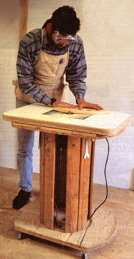

1. After cutting parallel straight edges on one end of the spool, use a large T-square to locate matching corners at the other end. 2. Use squares to lay out the shape of the router table. 3. Cut off semicircular portions of the spool using a blade that won't mind cutting through a few hidden nails.